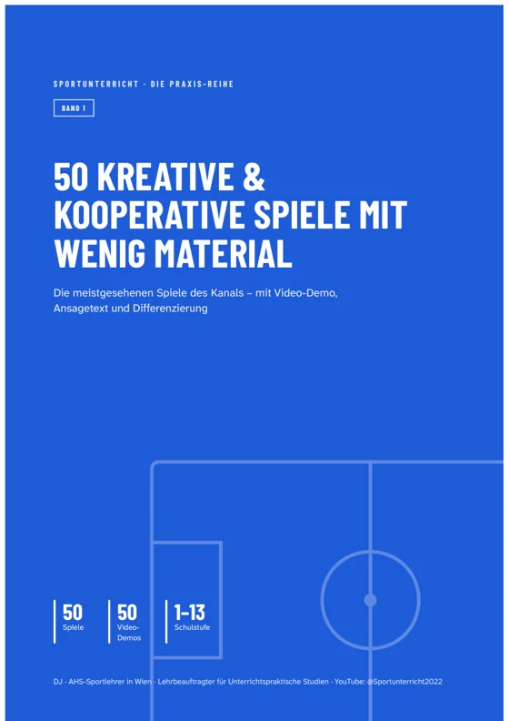
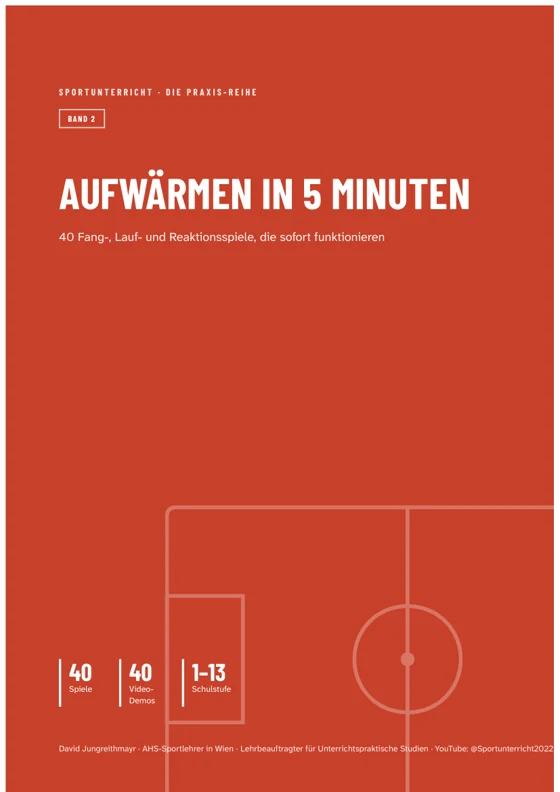
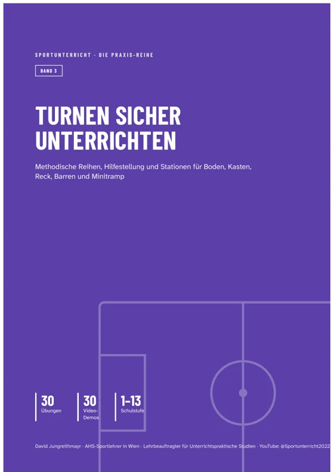
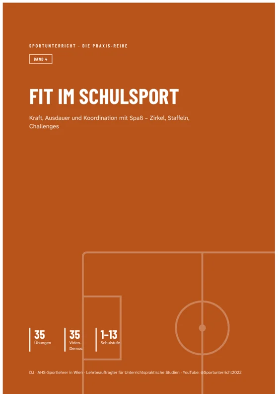
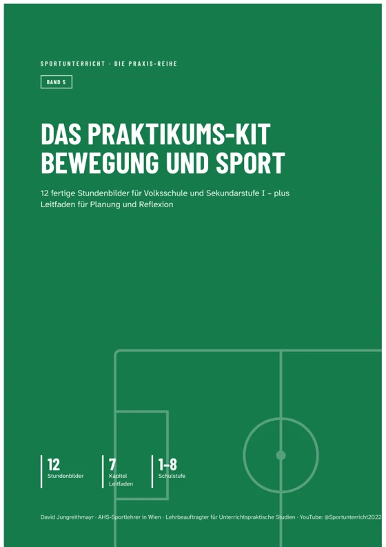
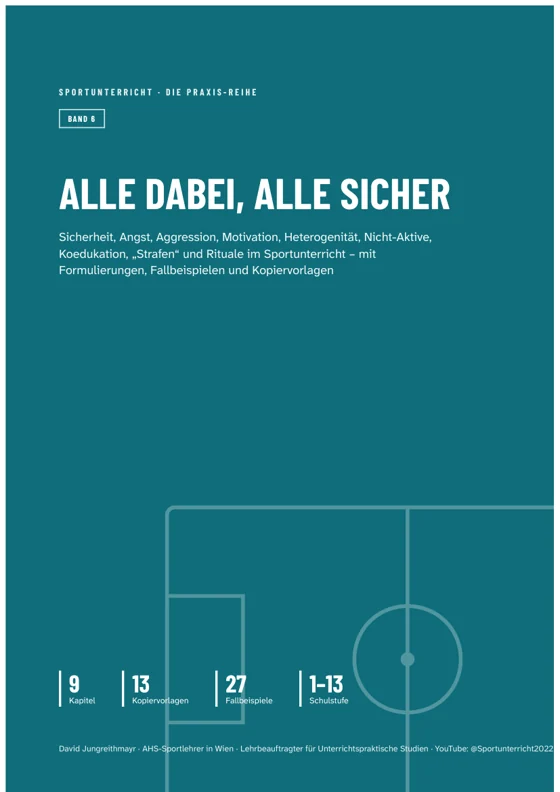

Band 1 der Praxis-Reihe
50 kreative & kooperative Spiele mit wenig Material
Die meistgesehenen Spiele des Kanals – mit Video-Demo, Ansagetext und Differenzierung
- Die 50 meistgesehenen Einzelspiele des Kanals – ausgewählt nach über 2 Millionen echten Aufrufen
- Sechs Kapitel: Aufwärmen, Kooperation, (fast) ohne Material, große Gruppen, kleine Hallen, Abschluss
- Jedes Spiel mit Ansagetext zum Vorlesen, Varianten und Sicherheitshinweis
- Übersichten nach Stundenteil und „ganz ohne Material“ zum schnellen Nachschlagen
50 Spiele · 45 Seiten A4 · 1–13. Schulstufe · Einzellizenz für deinen eigenen Unterricht · sichere Zahlung über Digistore24
Für wen ist dieser Band?
Für alle, die jede Woche Sport unterrichten und schnell ein Spiel brauchen, das sicher funktioniert – in der Volksschule genauso wie in der Unterstufe.
Das steckt drin
Kapitel 1 – Aufwärmspiele 9
Kreisfangen, Bockspringen, Turnbank-Reaktionsspiel, Nummernspiel, Schwarz-Weiß, Spielkartenlauf, Reifendrehen, Countdown, GehfangenKapitel 2 – Kooperationsspiele 8
Roboter, Gordischer Knoten, Menschenmemory, Chinesische Mauer, Spinnennetz, Förderband, Flussüberquerung, VertrauenssprungKapitel 3 – Spiele mit (fast) keinem Material 8
Glücksstaffel, Vier gewinnt, Seilspringen, Eier legen, Harry Potter, Master Mind, Sortieren, MagnetoKapitel 4 – Spiele für große Gruppen 10
Capture the Flag, Laola-Welle, Robin Hood, Ninja Warrior goes school, Treibball, Volleyball – Ball über die Schnur, Brückenvölkerball, Brennball, Actionball, 10er BallKapitel 5 – Spiele für kleine Spielfelder / wenig Platz 13
Langbänke, Inselball, Hütchenfussball, Wechselpass, Doppelrolle, Reifenkreis, Ballsalat, Kontaktball, Hoher Pfad, Giant Table Tennis, Rollerball, Virusball, SmashballKapitel 6 – Abschlussspiele / Cool-Down 2
Schaukelringe, Dirigent
So sieht jeder Eintrag aus
Ein vollständiges Beispiel aus dem Buch – genau so ist jede Seite aufgebaut:
1 · Kreisfangen
Lernziel: Die Schüler:innen verbessern ihre Reaktions- und Richtungswechselfähigkeit beim Fangen und Flüchten und entscheiden als Kreis gemeinsam, wem sie durch Öffnen der Lücken helfen.
Spielbeschreibung
Die Klasse bildet einen großen Kreis und fasst sich an den Händen. Eine Person ("Maus") steht innerhalb, eine zweite ("Katze") außerhalb des Kreises. Die Maus darf durch beliebige Lücken im Kreis ein- und ausschlüpfen, indem die Kreis-Kinder an dieser Stelle kurz die Arme heben und wieder senken; die Katze muss denselben Weg nehmen, darf also nur durch geöffnete Lücken. Fängt die Katze die Maus (Abschlagen reicht), werden zwei neue Kinder aus dem Kreis bestimmt. Der Kreis selbst ist aktiv am Spiel beteiligt, da er entscheidet, wem er hilft – das hält auch die "Zuschauer" konzentriert.
So erklärst du es
Wir stehen im Kreis und halten uns an den Händen. Die Maus ist im Kreis, die Katze draußen. Wenn ihr die Arme hebt, darf die Maus durch die Lücke schlüpfen – die Katze darf nur durch offene Lücken hinterher. Erwischt die Katze die Maus, kommen zwei neue Kinder dran.
Leichter / schwerer
- Für jüngere Klassen: Katze darf nur laufen, Maus darf zusätzlich hüpfen oder krabbeln.
- Zwei Mäuse und zwei Katzen gleichzeitig für höheres Tempo und mehr Beteiligung.
Tipp: Im Komplettpaket sparst du
Alle sechs Bände plus Jahresplaner für 59,90 € statt 97,40 €.
Zum KomplettpaketDie anderen Bände

Aufwärmen in 5 Minuten
Schnell erklärt, sofort in Bewegung: Fangspiele, Staffeln, Reaktionsspiele und Ideen für kleine Hallen.

Turnen sicher unterrichten
Vom Päckchen zur Rolle, von der Vorübung zum Hüftaufschwung: jede Übung mit methodischer Reihe, Hilfestellung und typischen Fehlern.

Fit im Schulsport
Kraft, Ausdauer, Koordination und Leichtathletik kindgerecht – mit sechs fertigen Zirkeln für die Stunde.

Das Praktikums-Kit Bewegung und Sport
Für Praktikum und Berufseinstieg: 12 Stundenbilder mit Lernzielen, Organisation, Differenzierung, Sicherheit und Lehrplanbezug.

Alle dabei, alle sicher
Die schwierigen Situationen im Turnsaal: neun Kapitel mit Strategien, wörtlichen Formulierungen, Fallbeispielen, Checklisten und Kopiervorlagen.